Waifu adalah hal penting bagi seorang pecinta anime, dan bahkan ada yang sampai membuatnya sebagai bagian dari hidupnya. Di Blue Archive sendiri ada beberapa karakter yang sering di jadikan waifu oleh para penggemarnya dan berikut atmin rangkum beberapa yang sering atmin jumpai di platform Tik Tok.
1. Serika
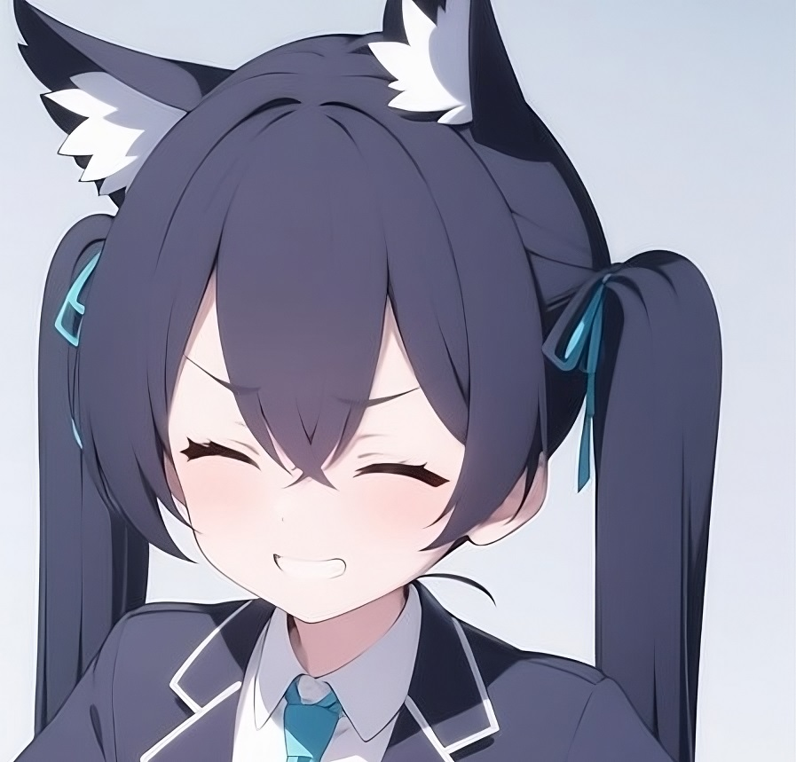
Seorang bendahara yang bekerja untuk satuan tugas Komite Penanggulangan Bencana di SMA Abydos. Kuromi Serika kesulitan mengekspresikan emosinya yang sebenarnya. Ia sering kali marah, tetapi sebenarnya dia baik hati. Dia bekerja paruh waktu di Shibaseki Ramen, sebuah restoran, menggunakan upahnya untuk membantu membayar utang sekolahnya sendiri.
2. Hoshino
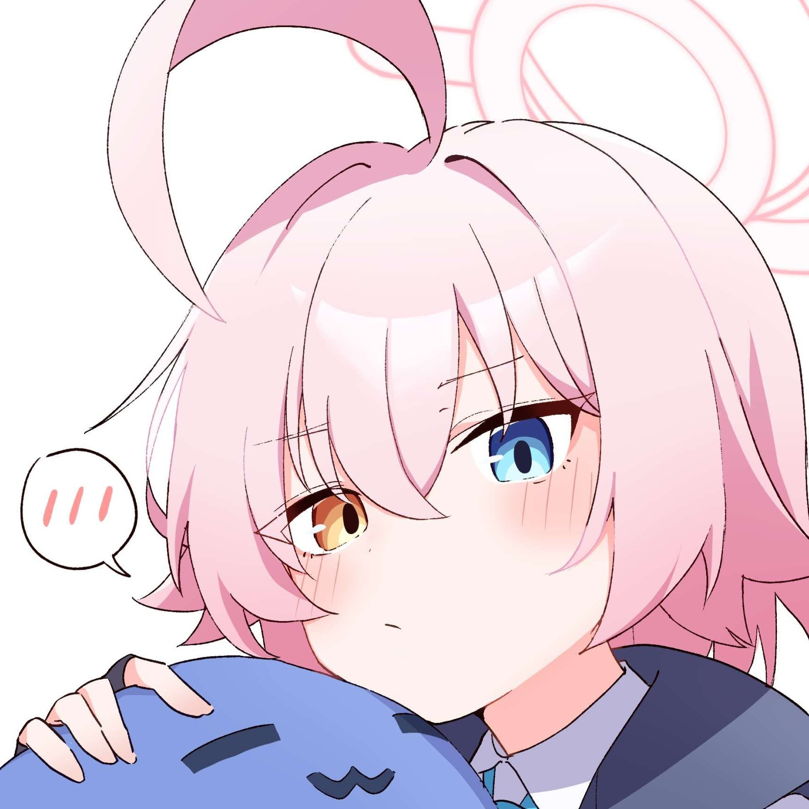
Seorang gadis muda pemalas dari SMA Abydos. Saat ini ia menjabat sebagai wakil presiden Dewan Siswa di Abydos, dan juga presiden Dewan Penanggulangan Bencana. Berbicara seperti orang tua, dia lebih suka bermain main daripada bekerja. Karena itu, dia sering menjadi sasaran kemarahan dari anggota dewan lainnya, tetapi begitu misi dimulai, dia melindungi anggota lain dengan bertarung gagah berani di garis terdepan.
3. Iroha
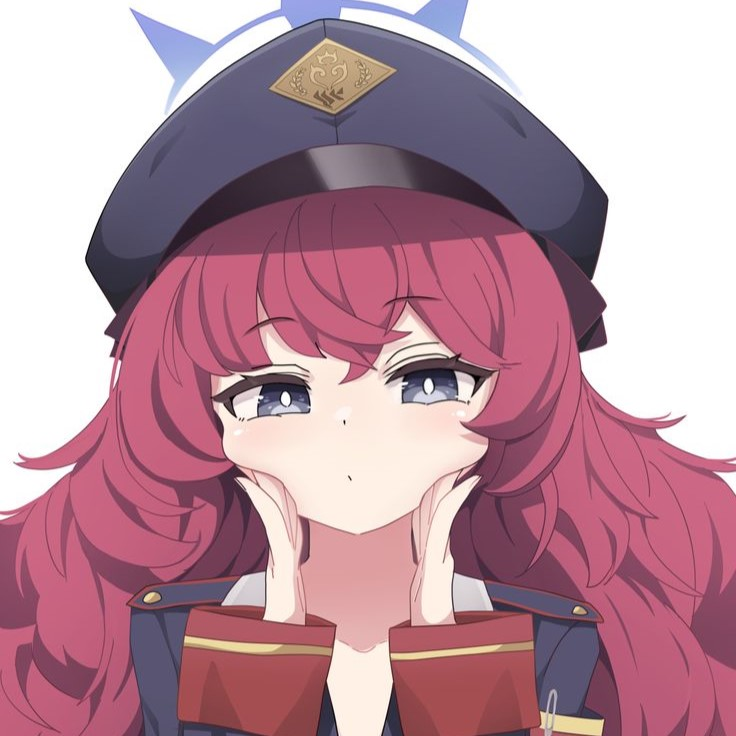
Seorang anggota Pandemonium Society yang sering menganggap segala sesuatu sebagai hal yang menyebalkan. Tidak heran, mengingat bosnya selalu membuat masalah dan sifat Gehenna yang kacau itu sendiri. Saat dia menjalankan tugasnya hari demi hari, dia menghela nafas satu atau dua kali dan menjalankan tugasnya acuh tak acuh.
4. Ibuki
\
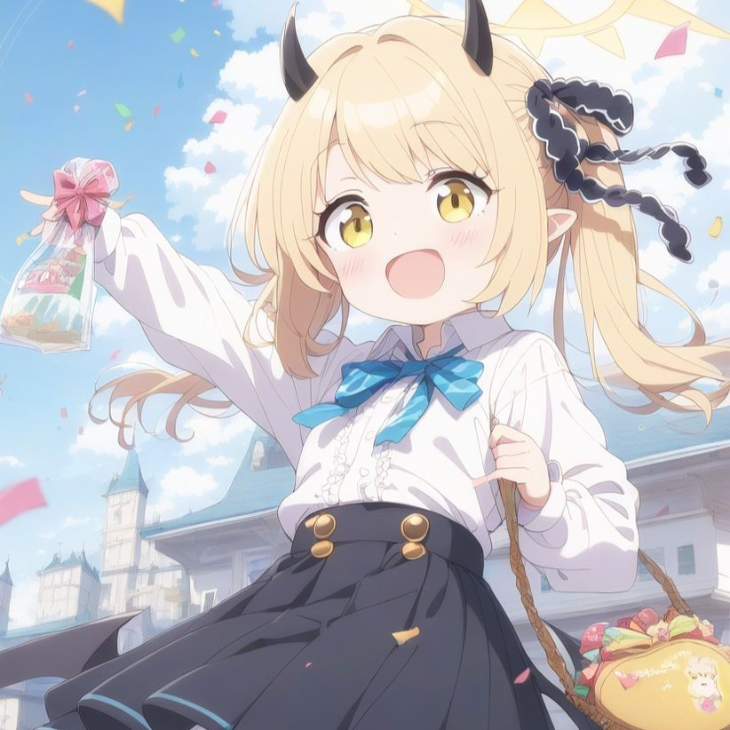
Ibuki adalah gadis kecil maskot yang energik dan anggota Pandemonium Society. Dia adalah gadis yang berperilaku baik yang bekerja keras hari ini agar tidak mengganggu para seniornya. rekan rekan anggota klub nya sering memanjakannya dan akan melakukan ap saja untuk menghukum siapa pun yang membuatnya sedih.
5. Ayane
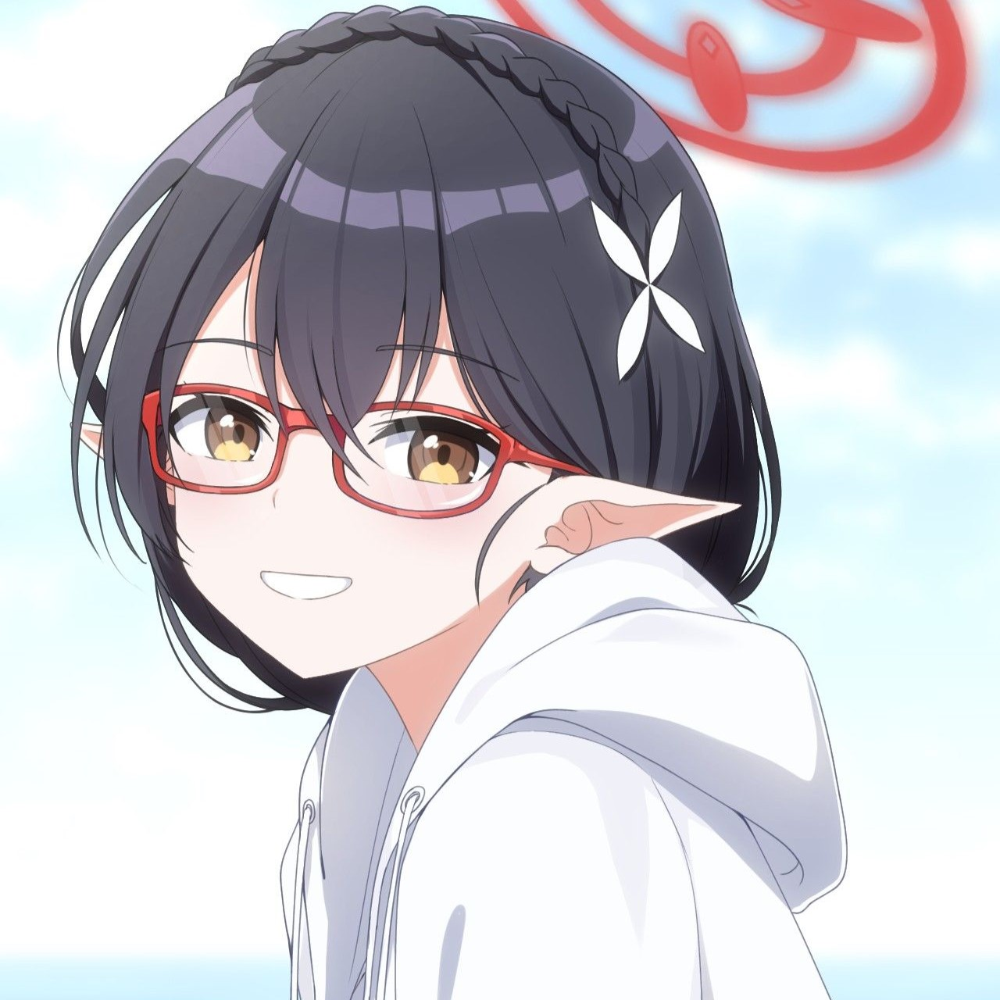
Sekretaris serius Komite Penanggulangan Abydos. Tipe gadis yang menghargai prinsip dan aturan, dia berusaha keras untuk memulihkan SMA Abydos. Seorang gadis pemalu dan sabar yang menunjukkan toleransi tinggi terhadap ide dan rencana aneh anggota komitenya. Namun, begitu kesabarannya habis, dia dikenal suka mengamuk dengan hebat.
6. Aoba
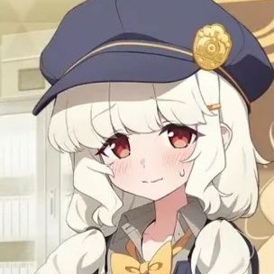
Aoba-san adalah seorang insinyur di Jurusan Manajemen Transportasi Barang di Highlander Railway Academy. Meskipun dia adalah seorang siswi yang pemalu dan penakut, dia juga memiliki sisi sarkastik santai. Namun, karena dia berbicara dengan suara pelan, mungkin agak sulit untuk mengetahui apakah yang dia katakan menghina atau tidak.
7. Momoi
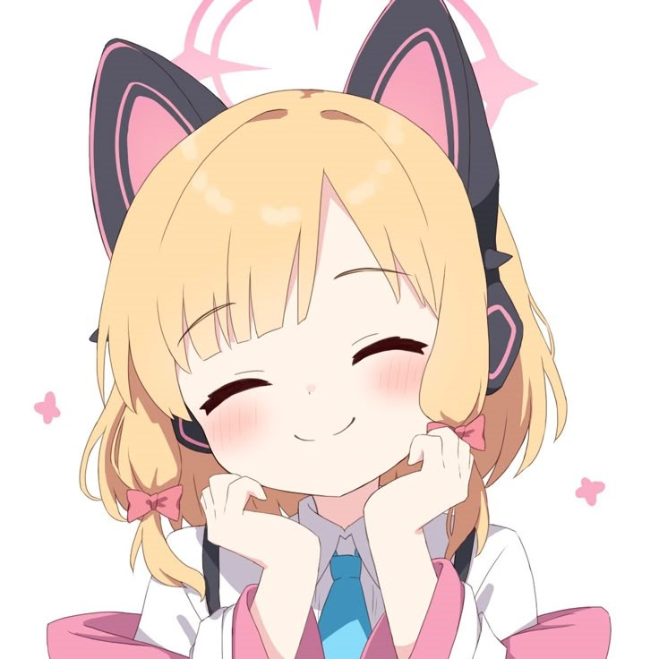
Penulis skenario untuk Departemen Pengembangan Game di Millennium. Baik dia maupun adik kembarnya, Midori, benar-benar mengembangkan video game di Departemen tersebut. Meskipun kepribadiannya yang ceria sangat bertolak belakang dengan saudara perempuannya yang pemalu, minat mereka terhadap permainan sangat mirip, sehingga mereka berdua menjadi pasangan yang hebat.
7. Yuuka
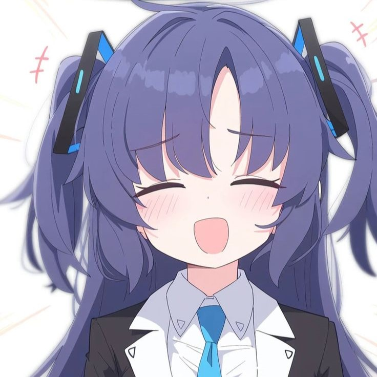
Bendahara Dewan Mahasiswa Akademi Milenium, "Seminar". Dia sangat ketat dalam hal keuangan dan sering bertengkar dengan kegiatan klub lain dari sudut pandangnya. Seorang jenius matematika terkemuka bahkan di antara basis siswa STEM di Millennium, ia mengawasi pengelolaan anggaran di Millennium. Ia pandai menggunakan sempoa dan memiliki kebiasaan menghitungnya untuk menenangkan diri saat menghadapi masalah yang rumit dan menyusahkan.
7. Hina
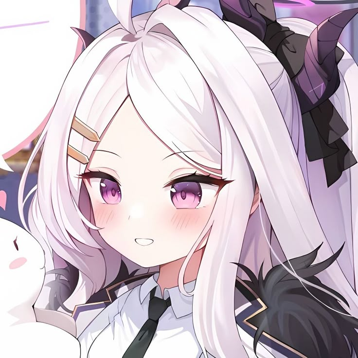
Dia adalah siswi tahun ke-3 dan ketua Tim Pengawas Gehenna saat ini, yang ditakuti oleh setiap siswi di akademi, jika tidak seluruh Kivotos. Di dalam hatinya, dia adalah orang yang suka menyusahkan dan santai, yang menyebutnya "merepotkan" setiap kali dia berbicara tentang peraturan sekolah. Namun, orang tersebut menjadi tegas di akademi, dan menerapkan penilaian yang tenang dan cepat tanpa ragu-ragu di medan perang. Kemampuan bertarungnya sangat menakjubkan dan karena alasan itulah, organisasi mana pun yang menentang Gehenna lebih takut padanya daripada siapa pun dari Tim Prefek.
8. Mika
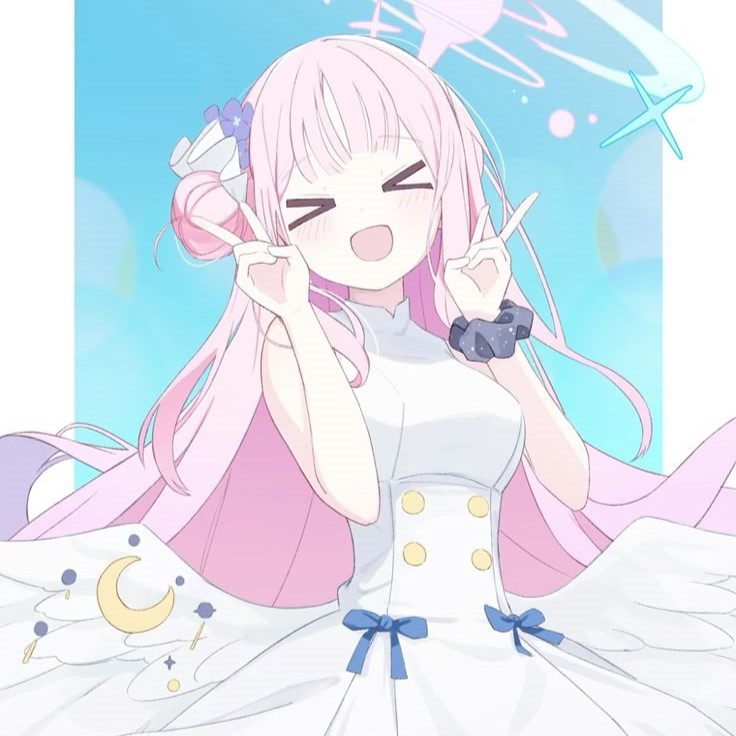
Seorang anggota dewan siswa Trinity, Tea Party , dan salah satu dari tiga presiden dewan siswa. Dia adalah teman masa kecil Nagisa dan telah mengenalnya selama sepuluh tahun. Dia memanggilnya Nagi-chan. Tidak seperti dua presiden Tea Party lainnya, dia tidak terlalu pintar dalam hal politik, tetapi kekuatannya tidak bisa diremehkan.
9. Seia
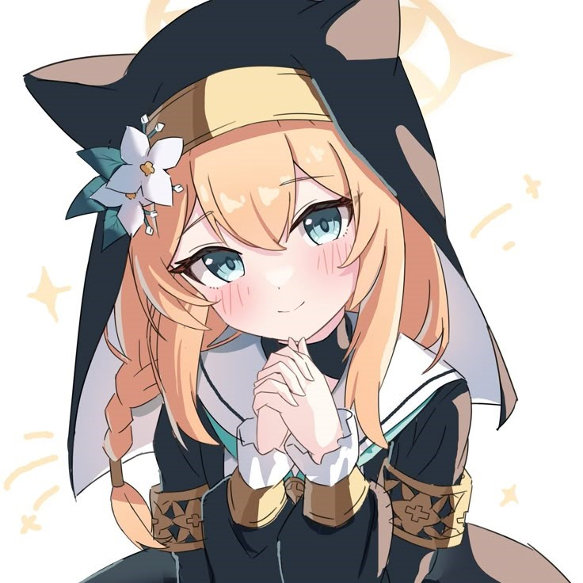
Seia adalah salah satu dari tiga presiden Tea Party. Dibandingkan dengan dua presiden lainnya, Seia memiliki cara bicara yang khas karena pilihan kosakatanya sangat berbeda dari yang lain. Seia juga dikenal memiliki mimpi yang bersifat kenabian yang dapat memprediksi masa depan secara akurat. Ia juga dapat berbicara dengan orang lain melalui mimpi-mimpi ini.
10. Shiroko
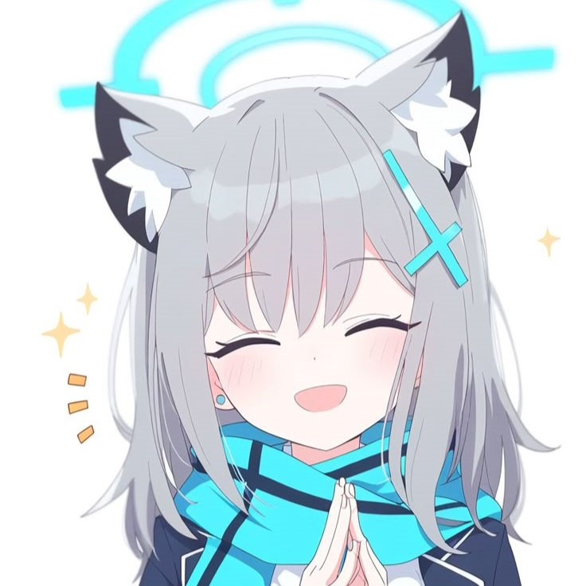
Kapten lapangan yang mencintai olahraga dari Komite Penanggulangan Bencana SMA Abydos . Shiroko adalah gadis yang tidak banyak bicara dan tidak banyak menunjukkan emosi. Dia mungkin tampak acuh tak acuh dengan penampilannya, tetapi dia sangat peduli dengan SMA Abydos. Karena keadaan yang menyusahkan di Sekolah Menengah Abydos , dia bersedia melakukan apa saja untuk merevitalisasi sekolah dengan cara apa pun. Namun, sering kali idenya terkadang konyol seperti mengusulkan untuk merampok bank demi dana sekolah.